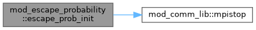

|
MPI-AMRVAC 3.2
The MPI - Adaptive Mesh Refinement - Versatile Advection Code (development version)
|
Module for escape probability radiative cooling modification. More...
Functions/Subroutines | |
| subroutine, public | escape_prob_init (iw_colmass, escape_sym, escape_height) |
| Register escape probability parameters. Called during hd_phys_init (before mesh parameters are available). Grid-dependent allocation is deferred to the first compute call. | |
| subroutine, public | escape_prob_compute_colmass () |
| Compute column mass from the corona toward the footpoints and scatter to wextra. Called once per timestep before advance(). | |
Module for escape probability radiative cooling modification.
Computes column mass along the 1D domain and provides an escape probability factor beta(tau) = (1 - exp(-tau))/tau to multiply the radiative cooling rate. This replaces the ad-hoc density taper with a physically-motivated opacity proxy based on the formalism of Carlsson & Leenaarts (2012).
Column mass is measured from the domain centre (apex of a symmetric loop) TOWARD the footpoints. This gives zero column mass at the apex (full coronal cooling) and large column mass at the footpoints (suppressed chromospheric cooling).
Currently supports 1D slab_uniform geometry with AMR (Phase 1).
| subroutine, public mod_escape_probability::escape_prob_compute_colmass |
Compute column mass from the corona toward the footpoints and scatter to wextra. Called once per timestep before advance().
For symmetric loops (escape_sym_=.true.): uses the domain centre as the apex and integrates outward toward both footpoints. This avoids the apex jumping when condensations form (density minimum is not stable). For non-symmetric atmospheres: integrates from the top of the domain (xprobmax) downward.
Definition at line 93 of file mod_escape_probability.t.
| subroutine, public mod_escape_probability::escape_prob_init | ( | integer, intent(in) | iw_colmass, |
| logical, intent(in) | escape_sym, | ||
| double precision, intent(in) | escape_height | ||
| ) |
Register escape probability parameters. Called during hd_phys_init (before mesh parameters are available). Grid-dependent allocation is deferred to the first compute call.
Definition at line 42 of file mod_escape_probability.t.
